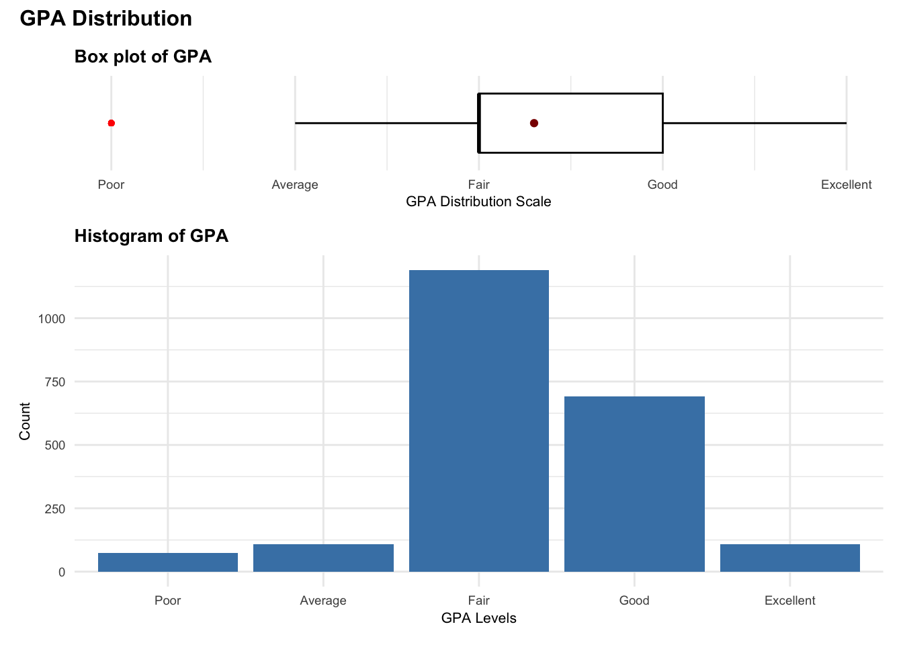
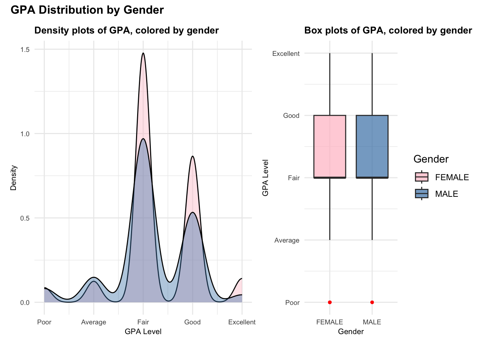
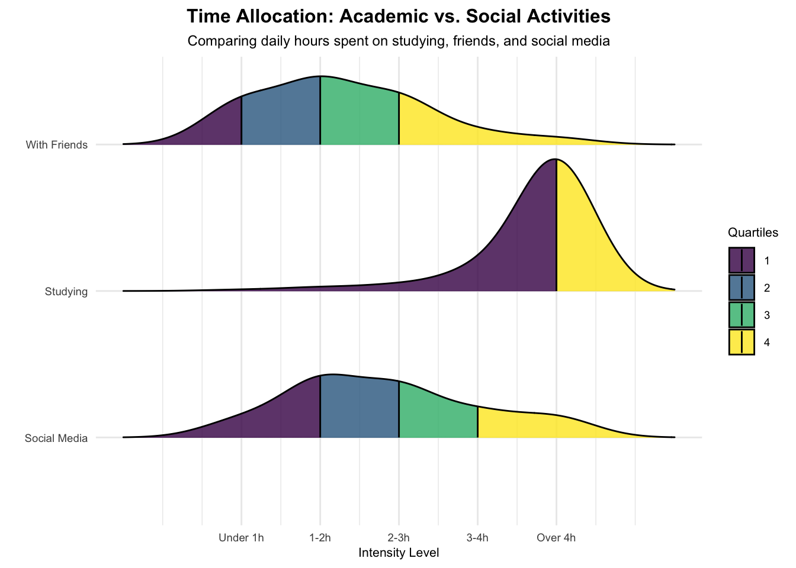

pacman::p_load(tidyverse, haven,
ggrepel, ggthemes,
ggridges, ggdist,
patchwork, scales)TakeHomeExercise1
Overview
Setting the scene
Educators have long studied how internal motivation and external contribute to student’s performance success. In Vietnam, research shows that lecturer capacity and student interest are the key drivers of performance.
Our task
Our goal was to dive into a survey dataset of 2170 students and alumni (collected March–June 2023) from University of Education - Vietnam National University, Hanoi, to see what’s actually affecting student’s learning performance. We cleaned and visualized the data to check how things like gender, family background, and university support impact GPA.
Getting started
Load packages
We load the following R packages using the pacman::p_load() function:
tidyverse: Core collection of R packages, clean data with dplyr and plot with ggplot2.haven: To import the survey data from SPSS or Stata.ggrepel: To prevent chart labels from overlapping so they’re more readable.ggthemes: To provide professional looking for plots.ggridges: To support ridgeline plots.ggdist: To build visualizations of distributions, confidence intervals.patchwork: To display multiple plots together into one layout.scales: Used for formatting axes.
Import data
The dataset used in the exercise is survey raw data retrieved from the Dataset of factors affecting learning outcomes of students at the University of Education, Vietnam National University, Hanoi
We import this dataset as survey_raw_data.
survey_raw_data <- read_csv("data/Database paper.csv",show_col_types = FALSE)Data pre-processing
We first take a look at the data, and handle data when necessary.
Summary of data
Checking the data structure in the Environment, we’ve got 2170 rows and 22 columns, all currently set as double types.
First, we need to slim down the dataset and filter for the specific variables we’re studying. For those selected variables, we’ll handle any NA values and convert them into the right data types for analysis. We don’t need to worry about checking for duplicates here, since identical survey answers are valid in this survey study.
Filtering data for selected variables
Next, we want to reduce the size of the dataset to focus on the variables most relevant to our analysis.
Following the framework used in the original research, we categorized our selection into two groups: Group A, which covers objective demographic factors, and Group B, which focuses on student perceptions and assessments. This approach provides a comprehensive view of what drives learning outcomes.
Based on the preliminary descriptive and inferential findings from the study, we have selected the following variables:
- Group A: Demographic and Objective Factors
- GPA: GPA is the most direct measure of learning outcomes. With 54.8% of students at a “Fair” level and only 4.9% at “Excellent,” the distribution is slightly skewed.
- Gender: Since the sample is 88.9% female, we want to investigate if this gender imbalance correlates with academic performance.
- Time Management: The data shows high academic engagement, with 82.2% of students studying for more than 8 hours daily. We want to compare how time spent on studies versus social media and social life.
- Family Background: Significant correlations were found between parental occupation and GPA. We will examine how parental education, occupation types, and economic status (poverty level) impact success.
- Group B: Student Perceptions and Assessments
- Learning Dimensions: Initial scores show that “Quality of Lecturers” is highly rated, while “Environment Adaptation” is significantly lower. This suggests that while teaching is strong, students still face hurdles in adjusting to university life. We will analyze the distribution across all nine perception dimensions.
| Variable Name | Type | Description |
|---|---|---|
| GPA | Categorical Ordered | Academic performance coded as levels 1–5 (Poor to Excellent) |
| Time_Friends, Time_SocialMedia, Time_Studying | Categorical Ordered | Daily time allocation coded in intervals |
| Mother_Edu, Father_Edu | Categorical Ordered | Parental education levels ranging from Primary to University/Graduate |
| Adapt_Learning_Uni, Study_Methods, SupportOf_Uni, SupportOf_Lec, Facilitie_Uni, Quality_Lecturer, TrainingCurriculum, Competitive_Class, InfluenceF_Friends | Categorical Ordered | 5-point Likert scales measuring perceptions (Not at all to Very) |
| Gender | Nominal | Student gender identity (Male/Female) |
| Mother_Occupation, Father_Occupation | Nominal | Employment types |
| Poor_Stu | Nominal | Economic status or financial aid eligibility (Yes/No) |
We then filter the survey_raw_data for the aforementioned variables into survey_data in the code chunk below.
survey_data <- survey_raw_data %>%
select(
GPA, Gender,
Time_Friends, Time_SocicalMedia, Time_Studying,
Poor_Stu, Mother_Edu, Father_Edu, Mother_Occupation, Father_Occupation,
Adapt_Learning_Uni, Study_Methods, SupportOf_Uni, SupportOf_Lec,
Facilitie_Uni, Quality_Lecturer, TrainingCurriculum,
Competitive_Class, InfluenceF_Friends
)Convert data types
From our previous step, we identified that the variables primarily fall into two categories: Categorical Ordered and Nominal.
For the Categorical Ordered variables, the numerical values represent specific levels of intensity or rank. To preserve this hierarchy, we will convert them into Ordered Factors and define their respective levels to lock in the logical progression.
Categorical Ordered: GPA, Time_Friends, Time_SocicalMedia, Time_Studying, Mother_Edu, Father_Edu, Adapt_Learning_Uni, Study_Methods, SupportOf_Uni, SupportOf_Lec, Facilitie_Uni, Quality_Lecturer, TrainingCurriculum, Competitive_Class, InfluenceF_Friends
Nominal: Gender, Poor_Stu, Mother_Occupation, Father_Occupation
For the Categorical Ordered variables, the numerical values represent specific levels of intensity or rank. To preserve this hierarchy, we will convert them into Ordered Factors and define their respective levels to lock in the logical progression.
survey_data <- survey_data %>%
mutate(
GPA = factor(GPA, levels = c(1, 2, 3, 4, 5),
labels = c("Poor", "Average", "Fair", "Good", "Excellent"),
ordered = TRUE),
Time_Friends = factor(Time_Friends, levels = c(1, 2, 3, 4, 5),
labels = c("Under 1h", "1-2h", "2-3h", "3-4h", "Over 4h"),
ordered = TRUE),
Time_SocicalMedia = factor(Time_SocicalMedia, levels = c(1, 2, 3, 4, 5),
labels = c("Under 1h", "1-2h", "2-3h", "3-4h", "Over 4h"),
ordered = TRUE),
Time_Studying = factor(Time_Studying, levels = c(1, 2, 3, 4, 5),
labels = c("Under 2h", "2-4h", "4-6h", "6-8h", "Over 8h"),
ordered = TRUE),
Mother_Edu = factor(Mother_Edu, levels = c(1, 2, 3, 4, 5, 6),
labels = c("Other", "Primary", "Secondary", "High School", "College", "Uni/Grad"),
ordered = TRUE),
Father_Edu = factor(Father_Edu, levels = c(1, 2, 3, 4, 5, 6),
labels = c("Other", "Primary", "Secondary", "High School", "College", "Uni/Grad"),
ordered = TRUE),
across(c(Adapt_Learning_Uni, Study_Methods, SupportOf_Uni, SupportOf_Lec,
Facilitie_Uni, Quality_Lecturer, TrainingCurriculum,
Competitive_Class, InfluenceF_Friends),
~ factor(.x, levels = c(1, 2, 3, 4, 5),
labels = c("Not at all", "Little", "Moderate", "Quite", "Very"),
ordered = TRUE))
)For the Nominal variables, we will convert them into standard Factors to highlight their categorical nature.
survey_data <- survey_data %>%
mutate(
Gender = recode(as.character(Gender), '1' = 'MALE', '2' = 'FEMALE'),
Gender = as.factor(Gender),
Poor_Stu = recode(as.character(Poor_Stu), '1' = 'Yes', '2' = 'No'),
Mother_Occupation = factor(as.numeric(Mother_Occupation), levels = c(1, 2, 3, 4, 5),
labels = c("Gov Employee", "Self-employed", "Freelance", "Other", "Not public")),
Father_Occupation = factor(as.numeric(Father_Occupation), levels = c(1, 2, 3, 4, 5),
labels = c("Gov Employee", "Self-employed", "Freelance", "Other", "Not public"))
)Checking for missing values
The colSums() function is used to check for missing values, and there are no missing values in the survey_data.
colSums(is.na(survey_data)) GPA Gender Time_Friends Time_SocicalMedia
0 0 0 0
Time_Studying Poor_Stu Mother_Edu Father_Edu
0 0 0 0
Mother_Occupation Father_Occupation Adapt_Learning_Uni Study_Methods
0 0 0 0
SupportOf_Uni SupportOf_Lec Facilitie_Uni Quality_Lecturer
0 0 0 0
TrainingCurriculum Competitive_Class InfluenceF_Friends
0 0 0 Preview pre-processed dataframe
We use the function head() to preview first 10 rows of the pre-processed data.
head(survey_data, 10)# A tibble: 10 × 19
GPA Gender Time_Friends Time_SocicalMedia Time_Studying Poor_Stu Mother_Edu
<ord> <fct> <ord> <ord> <ord> <chr> <ord>
1 Good FEMALE 1-2h 1-2h Over 8h No High Scho…
2 Fair MALE Under 1h 2-3h Over 8h No Secondary
3 Good FEMALE Under 1h 1-2h Over 8h No High Scho…
4 Good FEMALE 1-2h 1-2h Over 8h No High Scho…
5 Good MALE Under 1h 1-2h Under 2h No Secondary
6 Good FEMALE Under 1h 2-3h 2-4h No College
7 Fair FEMALE 1-2h 1-2h Over 8h No College
8 Exce… FEMALE 1-2h 1-2h Over 8h No High Scho…
9 Exce… FEMALE Under 1h 1-2h Over 8h No College
10 Fair FEMALE 2-3h 1-2h Over 8h No High Scho…
# ℹ 12 more variables: Father_Edu <ord>, Mother_Occupation <fct>,
# Father_Occupation <fct>, Adapt_Learning_Uni <ord>, Study_Methods <ord>,
# SupportOf_Uni <ord>, SupportOf_Lec <ord>, Facilitie_Uni <ord>,
# Quality_Lecturer <ord>, TrainingCurriculum <ord>, Competitive_Class <ord>,
# InfluenceF_Friends <ord>We use the str() and observed that dataset is now downsized to 19 columns.
str(survey_data)tibble [2,170 × 19] (S3: tbl_df/tbl/data.frame)
$ GPA : Ord.factor w/ 5 levels "Poor"<"Average"<..: 4 3 4 4 4 4 3 5 5 3 ...
$ Gender : Factor w/ 2 levels "FEMALE","MALE": 1 2 1 1 2 1 1 1 1 1 ...
$ Time_Friends : Ord.factor w/ 5 levels "Under 1h"<"1-2h"<..: 2 1 1 2 1 1 2 2 1 3 ...
$ Time_SocicalMedia : Ord.factor w/ 5 levels "Under 1h"<"1-2h"<..: 2 3 2 2 2 3 2 2 2 2 ...
$ Time_Studying : Ord.factor w/ 5 levels "Under 2h"<"2-4h"<..: 5 5 5 5 1 2 5 5 5 5 ...
$ Poor_Stu : chr [1:2170] "No" "No" "No" "No" ...
$ Mother_Edu : Ord.factor w/ 6 levels "Other"<"Primary"<..: 4 3 4 4 3 5 5 4 5 4 ...
$ Father_Edu : Ord.factor w/ 6 levels "Other"<"Primary"<..: 4 3 4 5 2 5 6 5 5 5 ...
$ Mother_Occupation : Factor w/ 5 levels "Gov Employee",..: 3 4 2 1 3 2 4 3 1 3 ...
$ Father_Occupation : Factor w/ 5 levels "Gov Employee",..: 2 2 1 1 3 1 1 5 1 3 ...
$ Adapt_Learning_Uni: Ord.factor w/ 5 levels "Not at all"<"Little"<..: 4 3 4 4 5 4 4 4 4 3 ...
$ Study_Methods : Ord.factor w/ 5 levels "Not at all"<"Little"<..: 4 3 4 4 5 4 4 4 4 4 ...
$ SupportOf_Uni : Ord.factor w/ 5 levels "Not at all"<"Little"<..: 3 3 4 5 5 5 5 5 4 5 ...
$ SupportOf_Lec : Ord.factor w/ 5 levels "Not at all"<"Little"<..: 4 4 4 5 5 4 5 4 4 5 ...
$ Facilitie_Uni : Ord.factor w/ 5 levels "Not at all"<"Little"<..: 4 4 3 5 5 5 5 4 4 5 ...
$ Quality_Lecturer : Ord.factor w/ 5 levels "Not at all"<"Little"<..: 4 3 4 5 5 5 4 5 5 5 ...
$ TrainingCurriculum: Ord.factor w/ 5 levels "Not at all"<"Little"<..: 4 3 4 4 5 4 5 4 4 5 ...
$ Competitive_Class : Ord.factor w/ 5 levels "Not at all"<"Little"<..: 3 3 4 4 4 3 4 3 4 4 ...
$ InfluenceF_Friends: Ord.factor w/ 5 levels "Not at all"<"Little"<..: 3 4 4 4 5 3 5 4 4 4 ...EDA 1: Distribution of performance
Methods
Our first step is to check the distributions of the target variables, which is GPA. Histogram and boxplot can show how the scores are distributed among the students.
Converting GPA to an Ordered Factor ensures the x-axis follows a logical “Poor” to “Excellent” order in geom_bar. For geom_boxplot, we use as.numeric(GPA) to convert factors to 1–5, allowing proper calculation of medians and quartiles. We add a dark red point via stat_summary for the Mean and mark Outliers. Finally, coord_flip() combined with scale_y_continuous aligns the numeric axis to text labels, ensuring the boxplot and bar chart are logically aligned for comparison.
hist_gpa <- ggplot(data = survey_data, aes(x = GPA)) +
geom_bar(fill = "steelblue") +
labs(x = "GPA Levels", y = "Count", title = "Histogram of GPA") +
theme_minimal() +
theme(
plot.title = element_text(size = 10, face = "bold"),
axis.title = element_text(size = 8),
axis.text = element_text(size = 7)
)
box_gpa <- ggplot(data = survey_data, aes(y = as.numeric(GPA), x = "")) +
geom_boxplot(fill = "white", color = "black", outlier.color = "red", outlier.size = 1) +
stat_summary(geom = 'point', fun = 'mean', color = "darkred", size = 1.5) +
coord_flip() +
scale_y_continuous(
breaks = 1:5,
labels = c("Poor", "Average", "Fair", "Good", "Excellent")
) +
labs(y = "GPA Distribution Scale", x = "", title = "Box plot of GPA") +
theme_minimal() +
theme(
plot.title = element_text(size = 10, face = "bold"),
axis.title = element_text(size = 8),
axis.text.x = element_text(size = 7),
axis.text.y = element_blank(),
panel.grid.major.y = element_blank()
)
gpa_distribution <- (box_gpa / hist_gpa) +
plot_layout(heights = c(1, 3.5)) +
plot_annotation(
title = "GPA Distribution",
theme = theme(plot.title = element_text(size = 12, face = "bold"))
)
gpa_distribution
Insights
The boxplot and bar chart suggest a negatively skewed distribution of learning outcome among students. The bar chart highlights majority of the student population is in the middle high achievement areas, with the “Fair” category accounting for the largest proportion at 54.8%, followed by “Good” at 31.9%. Only a small portion of students fall into the “Poor” (3.4%) or “Excellent” (4.9%) categories.
This trend is further supported by the boxplot, as the median and the mean both sit within the “Fair” range. The presence of an outlier at “Poor” level suggests a distinct minority still struggles.
This suggests that the university’s academic environment successfully supports most students in achieving “Fair” or “Good” levels, but reaching the “Excellent” still remains a challenge.
EDA 2: Distribution of performance by gender
Methods
Density plots and box plots are used to compare learning outcomes across genders. Given the big gender imbalance in our sample where females account for 88.9%, density plot is selected to eliminate the influence of disparate sample sizes. This allows for a fair comparison of how GPA is distributed within each gender group. To generate the smooth curves, GPA was converted from a categorical factor into numerical values (1-5) for calculation.
gender_density <- ggplot(data = survey_data, aes(x = as.numeric(GPA), fill = Gender)) +
geom_density(alpha = 0.4) +
scale_x_continuous(breaks = 1:5, labels = c("Poor", "Average", "Fair", "Good", "Excellent")) +
scale_fill_manual(values = c("MALE" = "steelblue", "FEMALE" = "pink")) +
labs(title = "Density plots of GPA, colored by gender", x = "GPA Level", y = "Density") +
theme_minimal() +
theme(
legend.position = "none",
plot.title = element_text(size = 10, face = "bold"),
axis.title = element_text(size = 8),
axis.text = element_text(size = 7)
)
gender_boxplot <- ggplot(data = survey_data, aes(x = Gender, y = as.numeric(GPA), fill = Gender)) +
geom_boxplot(alpha = 0.7, outlier.color = "red", outlier.size = 1) +
scale_y_continuous(breaks = 1:5, labels = c("Poor", "Average", "Fair", "Good", "Excellent")) +
scale_fill_manual(values = c("MALE" = "steelblue", "FEMALE" = "pink")) +
labs(title = "Box plots of GPA, colored by gender", x = "Gender", y = "GPA Level") +
theme_minimal() +
theme(
plot.title = element_text(size = 10, face = "bold"),
axis.title = element_text(size = 8),
axis.text = element_text(size = 7)
)
gender_analysis <- (gender_density + gender_boxplot) +
plot_layout(widths = c(7, 3)) +
plot_annotation(
title = "GPA Distribution by Gender",
theme = theme(plot.title = element_text(size = 12, face = "bold"))
)
gender_analysis
Insights
The density plot displays highly overlapping curves, suggesting that the probability distribution of GPA remains largely consistent regardless of gender. Both groups peak mainly at the “Fair” level. However, the female peak is sharper and higher, indicating a stronger concentration of students within the “Fair” tier, whereas the male distribution appears slightly flatter. The box plot further supports this, as the median lines for both genders positioned identically at the “Fair” level
Both the density and box plots suggest that the overall distribution of learning outcomes is similar between genders. Although Table 4 indicates that gender has a statistically significant impact on GPA (p = .009), the density plot shows that this difference is not drastic. The significance could be related to variations in the proportions of students at specific levels, such as the “Fair” and “Good” categories.
EDA 3: Comparison of student activities duration
Methods
To reflect the duration of student activities, in the ridgeline plot, the intensity levels is converted to specific hourly intervals and applied a smoothing bandwidth by setting bandwidth = 0.5 . This visualization allows for a clear comparison of daily time allocation among different usage.
time_data <- survey_data %>%
select(Time_Studying, Time_Friends, Time_SocicalMedia) %>%
mutate(across(everything(), as.numeric)) %>%
pivot_longer(
cols = everything(),
names_to = "Activity",
values_to = "Time_Level"
) %>%
mutate(
Activity = case_when(
Activity == "Time_Studying" ~ "Studying",
Activity == "Time_Friends" ~ "With Friends",
Activity == "Time_SocicalMedia" ~ "Social Media"
)
)
ggplot(time_data,
aes(x = Time_Level,
y = Activity,
fill = factor(after_stat(quantile)))) +
stat_density_ridges(
geom = "density_ridges_gradient",
calc_ecdf = TRUE,
quantiles = 4,
quantile_lines = TRUE,
scale = 0.9,
bandwidth = 0.5
) +
scale_x_continuous(
breaks = 1:5,
labels = c("Under 1h", "1-2h", "2-3h", "3-4h", "Over 4h")
) +
scale_fill_viridis_d(name = "Quartiles", alpha = 0.8) +
labs(
title = "Time Allocation: Academic vs. Social Activities",
subtitle = "Comparing daily hours spent on studying, friends, and social media",
x = "Intensity Level",
y = ""
) +
theme_minimal() +
theme(
plot.title = element_text(size = 12, face = "bold", hjust = 0.5),
plot.subtitle = element_text(size = 9, hjust = 0.5),
axis.title = element_text(size = 8),
axis.text = element_text(size = 7),
legend.title = element_text(size = 8),
legend.text = element_text(size = 7)
)
Insights
The ridgeline plot reveals a sharp contrast in how students manage their daily schedules. “Studying” shows a heavy concentration at the highest intensity level (Over 4h), where the quartiles are so densely clustered that Quartiles 2 and 3 are nearly invisible. This lack of visual separation suggests extreme academic intensity.
Besides, “Social Media” and “Friends” display broader distributions centered around moderate levels (typically between 1 and 3 hours). These social activities show a more balanced spread across the middle quartiles, suggesting that while students do maintain a social life, it is clearly secondary priority to their studies.
This commitment to studying is consistent with the high GPA levels observed in the previous analysis. The data confirms that for this student body, academic work is the first priority, with social activities occupying significantly less of their daily time.
EDA 4: Relationships between family factors and performance
Methods
To explore how family background shapes academic success, heatmap is built using geom_tile() to cross examine GPA against five family variables: parental education, parental occupation, and poverty status.
By calculating the proportion of students within each group, we can spot the areas of higher concentration through darker color intensities.
heatmap_data <- survey_data %>%
select(GPA, Poor_Stu, Mother_Edu, Father_Edu, Mother_Occupation, Father_Occupation) %>%
pivot_longer(cols = -GPA, names_to = "Family_Factor", values_to = "Factor_Value") %>%
count(Family_Factor, Factor_Value, GPA) %>%
group_by(Family_Factor, Factor_Value) %>%
mutate(Proportion = n / sum(n)) %>%
ungroup()
heatmap_data$Factor_Value <- factor(heatmap_data$Factor_Value,
levels = c("Other", "Primary", "Secondary", "High School", "College", "Uni/Grad",
"No", "Yes",
"Gov Employee", "Self-employed", "Freelance", "Not public"))
ggplot(heatmap_data, aes(x = Factor_Value, y = GPA, fill = Proportion)) +
geom_tile(color = "white") +
scale_fill_gradient(low = "white", high = "dodgerblue4", labels = percent_format()) +
facet_wrap(~ Family_Factor, scales = "free_x", ncol = 2) +
labs(
title = "GPA Performance by Family Factors",
subtitle = "Heatmap of GPA levels across different family backgrounds",
x = "Family Factor Category",
y = "GPA Level",
fill = "Proportion"
) +
theme_minimal() +
theme(
plot.title = element_text(size = 12, face = "bold", hjust = 0.5),
plot.subtitle = element_text(size = 9, hjust = 0.5),
axis.text.x = element_text(size = 7, angle = 30, vjust = 1, hjust = 1),
axis.text.y = element_text(size = 7),
axis.title = element_text(size = 8),
strip.text = element_text(size = 7, face = "bold"),
legend.position = "right",
legend.title = element_text(size = 8),
legend.text = element_text(size = 7),
panel.spacing = unit(1, "lines")
)
Insights
The heatmap shows that “Fair” and “Good” GPAs are the heavy hitters across almost family backgrounds.
- Parental Education: There is a upward shift in color density as we move from Primary to Uni/Grad education. The tiles getting darker in the “Good” and “Excellent” rows for students with highly educated parents.
- Occupation: For both mother’s and father’s jobs, children of Government Employees and the Self-employed seem to have a much more stable and stronger presence in the higher GPA brackets.
- Poverty Status: The contrast here is actually quite sharp. Students who aren’t from poor backgrounds have a much deeper concentration at the “Good” level, whereas students from poor backgrounds are more spread out across the “Fair” level.
This visualization suggests that while the student body has a strong academic baseline, family and financial factors benefit students in reaching higher performance, and this aligns with the high statistical significance (p = .000) for parental education/occupation that’s observed in Table 4.
EDA 5: Comparisons between perceptive dimensions
Methods
To look at how students actually perceive their university environment across nine different dimensions, mean scores and 95% confidence intervals is calculated for each category to see where the university excels and where students feel there’s room for improvement. The results are plotted in a comparison chart, sorted from highest to lowest rating.
perception_data <- survey_data %>%
select(Adapt_Learning_Uni, Study_Methods, SupportOf_Uni, SupportOf_Lec,
Facilitie_Uni, Quality_Lecturer, TrainingCurriculum,
Competitive_Class, InfluenceF_Friends) %>%
mutate(across(everything(), as.numeric)) %>%
pivot_longer(cols = everything(), names_to = "Dimension", values_to = "Score") %>%
group_by(Dimension) %>%
summarise(
mean_score = mean(Score, na.rm = TRUE),
se = sd(Score, na.rm = TRUE) / sqrt(n()),
.groups = 'drop'
) %>%
mutate(Dimension = reorder(Dimension, mean_score))
ggplot(perception_data, aes(x = Dimension, y = mean_score)) +
geom_point(size = 3, color = "steelblue") +
geom_errorbar(aes(ymin = mean_score - 1.96 * se, ymax = mean_score + 1.96 * se),
width = 0.2, color = "steelblue") +
coord_flip() +
labs(
title = "Perception Scores Across University Dimensions",
subtitle = "Mean scores with 95% confidence intervals (Scale 1-5)",
x = "",
y = "Average Rating"
) +
theme_minimal() +
theme(
plot.title = element_text(size = 12, face = "bold", hjust = 0.5),
plot.subtitle = element_text(size = 9, hjust = 0.5),
axis.text.y = element_text(size = 7),
axis.text.x = element_text(size = 7),
axis.title = element_text(size = 8),
panel.grid.minor = element_blank()
)
Insight
Quality_Lecturer has the highest ratings, showing students have high confidence in the teaching staff. SupportOf_Lec and TrainingCurriculum also have very high scores, highlighting strong academic structural support. On the other hand, Adapt_Learning_Uni and Study_Methods are have the low scores, this suggests that students are quite struggling with adapting to the university learning style.
To conclude, high GPAs we found earlier could be directly supported by the high scored Quality_Lecturer and TrainingCurriculum. The university provides a great academic environment that help students succeed, even though students find the adaptability a bit tough.
Summary and conclusion
In this project, we cleaned and visualized data to see how academic performance is associated with demographic factors, family background, and student perceptions.
The results show that these high GPA levels are highly related to a high pressure study environment and specific socioeconomic advantages:
- Both female and male students have a similar performance distribution which falls under the “Fair” and “Good” levels, with females having a tighter concentration in the “Good” and “Excellent” categories compared to males.
- Students are focused on study. As most of them spend over 4 hours a day studying, which is far more than the time they spend on social media or with friends.
- Family background is a huge performance booster for students’ performance. Students with highly educated parents (Uni/Grad) or those in stable professions (Gov Employees/Self-employed) consistently hit the highest GPA tiers.
- The university’s top assets are lecturer quality and curriculum, as both earned high ratings from the student survey. This strong support system is the backbone of student success.
To wrap up with some recommendations, since this project focused mostly on the visuals, it’s important to note that the data currently only shows correlations. We can’t definitively prove a direct cause and effect relationship between family background or time management and GPA just yet. To really back up what we’re seeing in the heatmaps and boxplots, we should use formal statistical tests to confirm the strength of these relationships.
It would be great to dig into some other factors we didn’t cover here, like mental health or specific study techniques, just to get a fuller picture of what’s actually driving success.
References
- Dataset about VNU students, Code Book
- Table 1. Distribution of responses by questions about Group A - students’ demographics in the dataset.
- Table 3. Distribution of responses by question about participants’ grade point average (GPA)
- Table 4. Correlations among Group A and students’ outcomes (GPA)
- Table 7. Ordinal regression results